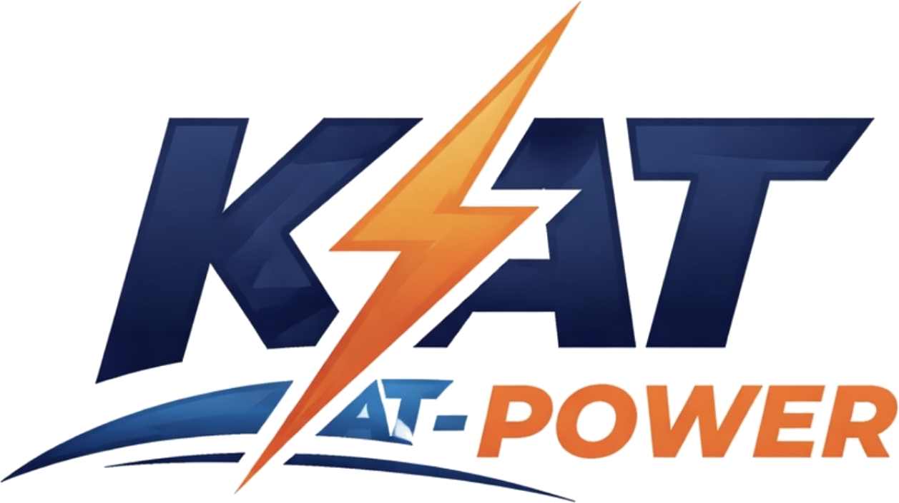

Generator Sales
Supply of diesel generator sets for commercial, residential and industrial applications.
POWER • ENGINEERING • SERVICE
Star Tech Standard Ltd supplies generators and provides specialist diesel-generator repairs, maintenance, diesel fuel systems, parts and industrial power support.
Diesel generator repair and technical service. Gasoline generators are supplied under our Kat Power brand; gasoline-generator repair is not offered.
WHAT WE DO
From routine maintenance to complex diesel fuel and monitoring systems, we focus on dependable operation and clear technical scope.
Supply of diesel generator sets for commercial, residential and industrial applications.
Fault diagnosis, preventive maintenance, corrective repairs and technical troubleshooting for diesel generators.
Diesel pumps, injection systems, filters, tanks, transfer equipment and fuel-system servicing.
Fuel transfer, flow metering, level protection and control systems for generator plants and facilities.
Specialist generator components including alternators, AVR, pumps and engine-system parts.
Practical support focused on reliability, troubleshooting and reducing equipment downtime.

KAT POWER
Kat Power is our gasoline-generator brand. Selected models are available for sale through our showroom display locations.
ABOUT STAR TECH STANDARD
Star Tech Standard Ltd is a Nigeria-based power equipment and technical service company serving customers who depend on reliable electrical power.
Our work covers generator sales, diesel generator repairs and maintenance, diesel fuel systems, monitoring and transfer systems, parts and specialist technical services.
KAT POWER SALES LOCATIONS
Use the Google Maps buttons below to open the location directly in Google Maps.
The Emperor Estate Mall, Km 34, New Road, Sangotedo, Lagos.
Open in Google Maps →Lekki–Epe Expressway, Ajah, Lekki 106104, Lagos.
Open in Google Maps →Dream Plaza, 7 Bishop Aboyade Cole Street, Eti-Osa, Lagos 106104.
Open in Google Maps →CONTACT
For generator service, equipment supply, parts or a power-system project, contact Star Tech Standard Ltd.